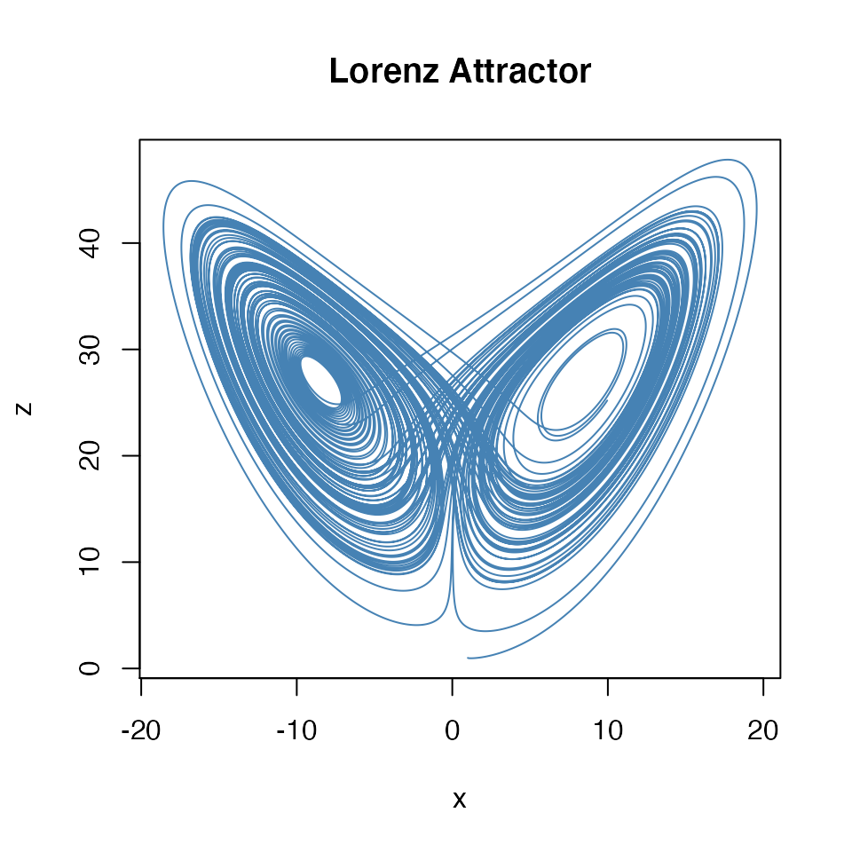
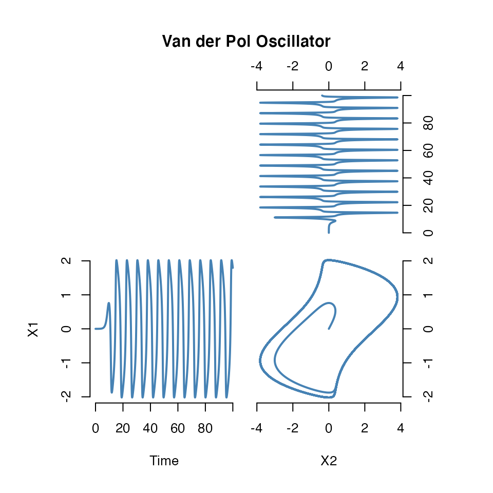

odeintr by Timothy H. Keitt is an R package for integrating differential equations with the Boost odeint library. It allows specifying the model in C++ code and compiling it on the fly with Rcpp.
Here we provide an interface to the odeintr package, but
odeintr.However, the interface is not stable and may subject to change in future. This mainly serves an example of how to extend symengine and you are welcome to check out the source code.
## SymEngine Version: 0.9.0## _____ _____ _
## | __|_ _ _____| __|___ ___|_|___ ___
## |__ | | | | __| | . | | | -_|
## |_____|_ |_|_|_|_____|_|_|_ |_|_|_|___|
## |___| |___| A ordinary differential equation could be constructed with dxdt(x) == rhs where x and rhs will be converted to SymEngine’s ‘Basic’ S4 object. This works by defining a S4 method of == for the return type of dxdt().
For example
## Ordinary differential equation:
## d(x)/dt == 3.0/(1.0 + x)ODESystem will take a list of ordinary differential equations, generate C++ source code and compile on the fly with Rcpp. The following is the Lorenz system.
sigma <- 10
rho <- 28
beta <- 8/3
use_vars(x, y, z)## Initializing 'x', 'y', 'z'
lorenz_sys <- list(
dxdt(x) == sigma * (y - x),
dxdt(y) == (rho - z) * x - y,
dxdt(z) == - beta * z + x * y
)
lorenz_sys <- ODESystem(lorenz_sys, method = "rk5_i")The method argument is passed to odeintr::compile_sys.
A S4 method of predict is defined to run the model with given initial conditions, duration and step_size.
res <- predict(lorenz_sys, init = c(x=1, y=1, z=1),
duration = 100, step_size = 0.001, start = 0)
head(res)## Time x y z
## 1 0.000 1.000000 1.000000 1.0000000
## 2 0.001 1.000130 1.025989 0.9983486
## 3 0.002 1.000516 1.051961 0.9967278
## 4 0.003 1.001158 1.077922 0.9951378
## 5 0.004 1.002051 1.103879 0.9935788
## 6 0.005 1.003193 1.129840 0.9920511
Example of Van der Pol oscillator from odeintr package.
use_vars(x, y)## Initializing 'x', 'y'
vdp_sys <- ODESystem(
dxdt(x) == y,
dxdt(y) == 2 * (1 - x * x) * y - x,
method = "bsd" # Bulirsch-Stoer
)
res <- predict(vdp_sys, init = rep(1e-4, 2), duration = 100, step_size = 0.01)
oldpar <- par(mfrow = c(2, 2), mar = rep(0.5, 4), oma = rep(5, 4), xpd = NA)
make.plot <- function(xy, xlab = NA, ylab = NA)
plot(xy, col = "steelblue", lwd = 2, type = "l",
axes = FALSE, xlab = xlab, ylab = ylab)
plot.new()
make.plot(res[, c(3, 1)]); axis(3); axis(4)
make.plot(res[, c(1, 2)], "Time", "X1"); axis(1); axis(2)
make.plot(res[, c(3, 2)], "X2"); axis(1); axis(4)
title(main = "Van der Pol Oscillator", outer = TRUE)
par(oldpar)